anunciosIniciais e setoresPrincipais em lib/models/anuncio.dart), extraída do protótipo do Figma.
| # | Elemento | Conteúdo exato (conforme Figma) |
|---|---|---|
| E1 | Cabeçalho fixo (64 px, #FAF8FF) | Logo Agrou (32×32) · título "Agrou" (#0F5C2A) e subtítulo "Início" (#5B6070) · botão de sino com marcador #BA1A1A (8×8) e avatar do usuário (32×32) à direita. |
| E2 | Faixa de cotação (36 px, #283044) | Ponto #7FFC97 + "MERCADO AGORA" à esquerda · "Boi Gordo SP: R$ 315,50/@" + ícone de tendência + "+0.8%" (#7FFC97) à direita. |
| E3 | Banner Hero e busca (#006B2C → #1B7A3A) | Pílula "Plataforma Oficial do Agronegócio" · título "Negocie direto no campo sem intermediários" · subtítulo · cartão branco com campo TextField (placeholder "Buscar tratores, nelore, soja, colheitadeiras..."), botão de filtros (#EAEDFF), seletor de região (inicial "Mato Grosso & SP") e botão "Buscar →". |
| E4 | Faixa de verificação (#F1F2FA) | Quadrado #8AF7A0 com selo · título "100% Produtores Verificados" · subtítulo "Zero Golpes • Checagem de CAR, GTA e Nota Fiscal" · seta >. |
| E5 | Setores Principais | Título "Setores Principais" / "Explore por cadeia produtiva" + link "Ver todos>" · grade 2×2 de cartões 128 px: (1) Tratores & Máquinas, (2) Gado & Animais, (3) Insumos & Sementes, (4) Veículos & Carga. |
| E6 | Modalidades de Negócio | Título "Modalidades de Negócio" · 3 botões horizontais: "Compra Direta" (selecionado inicialmente em #006B2C), "Leilões Ativos" e "Barter & Permuta". |
| E7 | Oportunidades do Dia | Cabeçalho "Oportunidades do Dia" / "Lotes auditados com documentação regular" · 4 cards com foto 192 px, badges, categoria, cidade/UF, título, bloco técnico de 2 colunas, valor em #1B7A3A e botão "Negociar": (1) Lote 45 Novilhas Nelore PO Registradas (Uberaba, MG · R$ 148.000), (2) Trator John Deere 8335R (335 cv) Cabinado (Mirassol, SP · R$ 430.000), (3) Colheitadeira New Holland CR 9060 (Rio Verde, GO · R$ 890.000), (4) Pulverizador Jacto Uniport 3030 Plus (Sorriso, MT · R$ 620.000). |
| E8 | Banner CTA (#283044) | Etiqueta "VENDA DIRETA SEM COMISSÃO" · título "Tem maquinário ou gado para negociar?" · botão "Publicar Anúncio Grátis" · rodapé "Sem mensalidade" e "Contato Direto". |
| E9 | Rodapé institucional (#E2E7FF) | Logo "Agrou" · texto descritivo · links (Termos e Condições, Privacidade & LGPD, Suporte ao Produtor, Segurança & GTA) · "© 2026 Agrou Tecnologia Agrícola Ltda. Todos os direitos reservados." |
| E10 | Barra inferior fixa (68 px, #FAF8FF) | 5 itens: "Início" (selecionado), "Explorar", botão + "Anunciar" (#006B2C), "Anúncios" (badge "3") e "Perfil". |
| ID | Ao tocar em… | Acontece… |
|---|---|---|
| I1 | Notificações / Avatar (E1) | Exibe "Nenhuma notificação nova" (sino) ou "Usuário logado: Antônio Carlos Novaes" (avatar). |
| I2 | Busca + Buscar → (E3) | Com texto válido após .trim(), filtra os cards; com campo vazio ou só espaços, mantém os 4 anúncios. |
| I3 | Seletor de região (E3) | Abre opções e filtra pela região selecionada; "Todas as regiões" limpa o filtro regional. |
| I4 | Filtros (E3) / Verificados (E4) | Exibe avisos "Filtros técnicos aplicados" e "Produtores validados por CAR, GTA e Sefaz". |
| I5 | Setor (E5) / Ver todos> | Filtra pelo setor tocado com borda #006B2C; novo toque ou "Ver todos>" exibe todos os 4 cards. |
| I6 | Modalidades (E6) | Alterna botão para #006B2C: Compra Direta (4), Barter & Permuta (2) e Leilões Ativos (estado vazio + botão). |
| I7 | CTA / Rodapé / Abas (E8-E10) | Exibe aviso informando que a tela correspondente está fora do escopo atual, sem sair da Início. |
| I8 | Rolagem da tela | Cabeçalho (E1) e barra inferior (E10) ficam fixos; apenas a área central rola. |
| ID | Destino | Ao tocar em X, abre a tela Y com Z |
|---|---|---|
| N1 | Detalhes Do Lote (Nelore) | Ao tocar no card 1 ou em "Negociar", abre Detalhes Do Lote com título "Lote 45 Novilhas Nelore PO Registradas", "Uberaba, MG", R$ 148.000, galeria 1/3 e ficha técnica pecuária. |
| N2 | Detalhes Do Lote (Trator JD) | Ao tocar no card 2 ou em "Negociar", abre Detalhes Do Lote com título "Trator John Deere 8335R", "Mirassol, SP • Disponível para vistoria física na fazenda", R$ 430.000, galeria 1/6 e 7 itens técnicos. |
| N3 | Detalhes Do Lote (Colheitadeira) | Ao tocar no card 3 ou em "Negociar", abre Detalhes Do Lote com título "Colheitadeira New Holland CR 9060", "Rio Verde, GO", R$ 890.000 e ficha de colheitadeira. |
| N4 | Detalhes Do Lote (Pulverizador) | Ao tocar no card 4 ou em "Negociar", abre Detalhes Do Lote com título "Pulverizador Jacto Uniport 3030 Plus", "Sorriso, MT", R$ 620.000 e ficha do pulverizador. |
Anuncio na entrada e do retorno à tela Agrou – Início.Anuncio enviado pela tela Agrou – Início no Navigator.push (com fallback para Trator John Deere 8335R quando aberta isoladamente).
| # | Elemento | Conteúdo exato (no anúncio padrão Trator JD) |
|---|---|---|
| E1 | Cabeçalho fixo | Seta voltar (btnVoltar) · logo "Agrou" · título "Detalhes Do Lote" · avatar (assets/avatar_user.png). |
| E2 | Galeria | Foto 292 px, contador "1/6" no topo esquerdo, botões favoritar e compartilhar no topo direito, setas ‹ ›. |
| E3 | Miniaturas | Até 5 miniaturas (64×48); selecionada com borda #1B7A3A de 2 px. |
| E4 | Etiquetas | Tratores & Máquinas (#DCE4FF), Usado Revisado (#8AF7A0), Produtor Verificado (CPF/CNPJ) (#FFDDB3). |
| E5 | Título e local | "Trator John Deere 8335R" · "Mirassol, SP • Disponível para vistoria física na fazenda". |
| E6 | Card de preço | "VALOR À VISTA NEGOCIÁVEL" · "R$ 430.000" · etiqueta Permuta (Gado ou Soja Futura) · faixa Garantia Agrou Safe. |
| E7 | Card do vendedor | Foto, "Antônio Novaes" + selo, Fazenda Santa Fé • Mirassol/SP, nota ★ 4.9 (28 vendas concluídas), RESPOSTA < 15 minutos e NF ORIGEM Validada no Sefaz. |
| E8 | Ficha Técnica Oficial | Etiqueta REVISÃO AUTORIZADA + grade 2 colunas (Horímetro, Ano/Modelo, Potência, Câmbio, Piloto, Rodados e Hidráulico). |
| E9 | Histórico de Manutenção | Destaque "Motor e Transmissão Novos (08/2024)" + 3 observações do proprietário. |
| E10 | Prancha & Frete | "Cotação p/ Prancha Pesada" + botão "Calcular CEP". |
| E11 | Segurança Agrou | Aviso em fundo #F1F2FA com ícone de escudo #9A6A00. |
| E12 | Rodapé fixo | Botão #25D366 "Negociar no WhatsApp" + telefone · link Emitir Proposta Formal com Garantia de Compra · Anúncio #AGR-8335. |
| ID | Ao tocar em… | Acontece… |
|---|---|---|
| C1 (Volta) | Seta voltar (E1) | Fecha Detalhes Do Lote e volta à tela Agrou – Início mantendo a busca, região, setor, modalidade, posição de rolagem e estado de favorito do anúncio. Sem tela anterior, exibe "Voltando para o Início". |
| C2 | Favoritar (E2) | Alterna coração em #F44336 e exibe "Adicionado aos favoritos" / "Removido dos favoritos", refletindo o ícone na tela Início ao retornar. |
| C3 | Compartilhar (E2) | Exibe "Link do anúncio copiado". |
| C4 / C5 | Setas › / ‹ (E2) | Avança ou retrocede foto e atualiza contador (1/6 ↔ 6/6 circular). |
| C6 | Miniatura (E3) | Atualiza foto principal, contador e borda verde na miniatura tocada. |
| C7 | Calcular CEP (E10) | Abre diálogo de CEP; com 8 dígitos válidos exibe "Frete estimado: R$ 4.800"; vazio/inválido exibe "Informe um CEP válido com 8 dígitos". |
| C8 | WhatsApp (E12) | Abre https://wa.me/5517999821234 com mensagem do anúncio selecionado. |
| C9 / C10 | Telefone / Proposta (E12) | Exibe "Ligando para Antônio Novaes…" e "Proposta formal em breve". |
| C11 | Rolagem da tela | Cabeçalho (E1) e rodapé (E12) permanecem fixos; somente o conteúdo rola. |
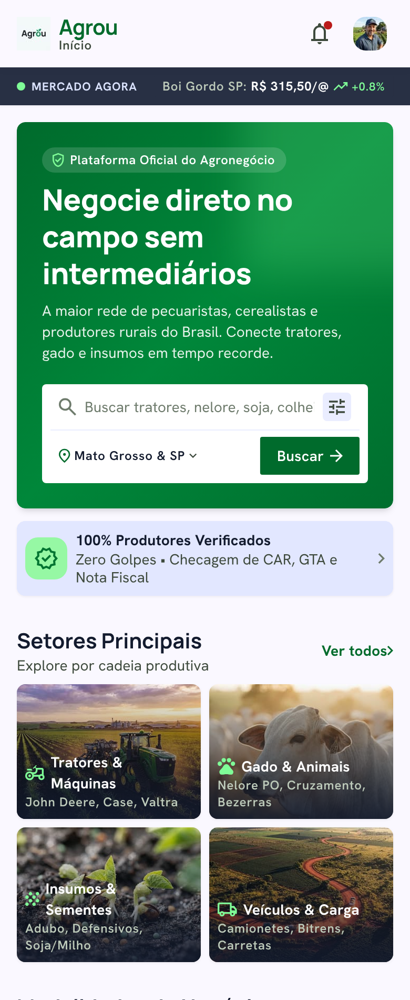
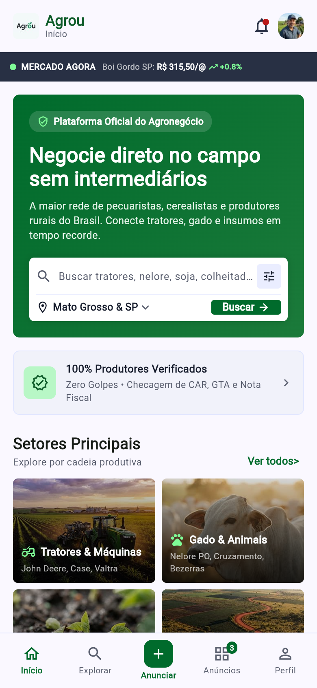
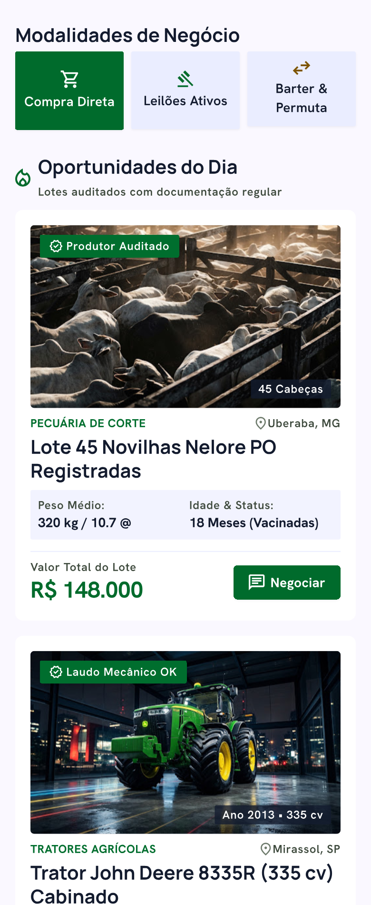
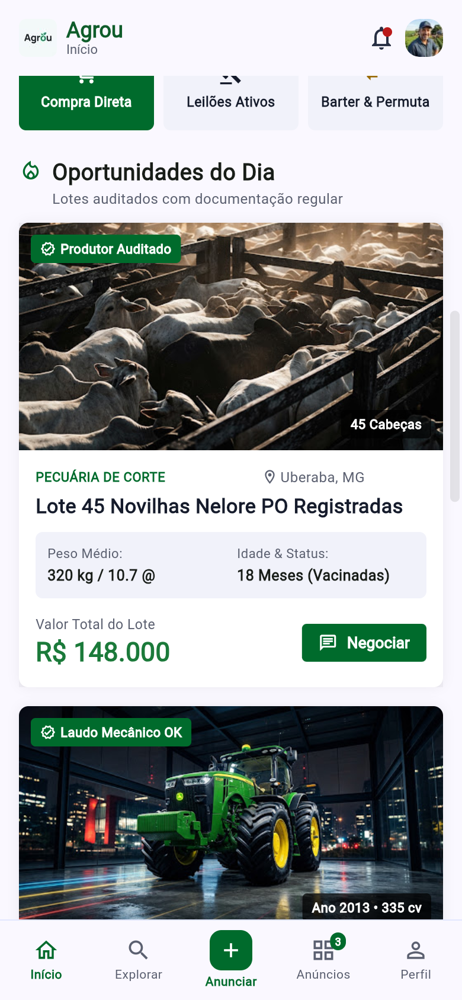
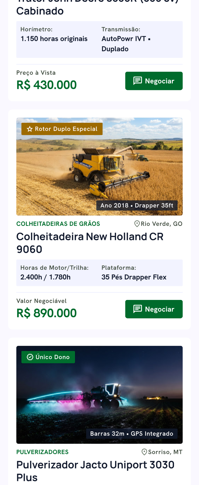
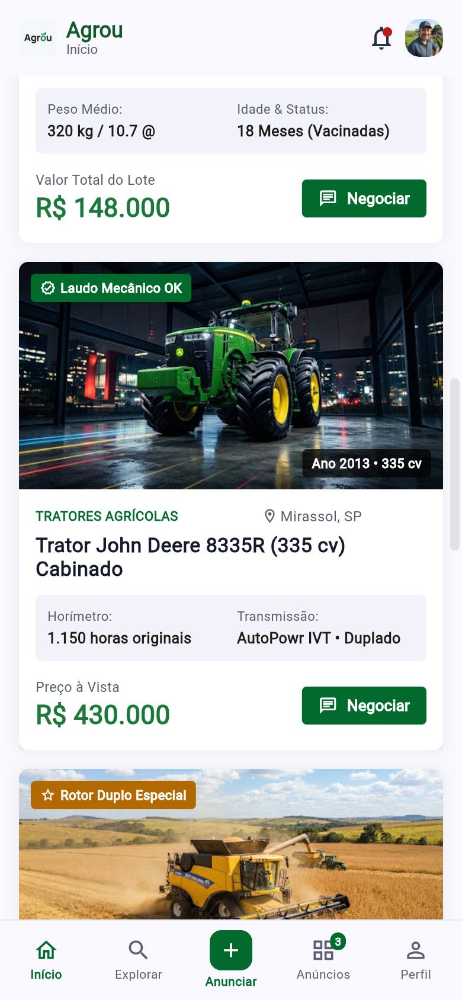
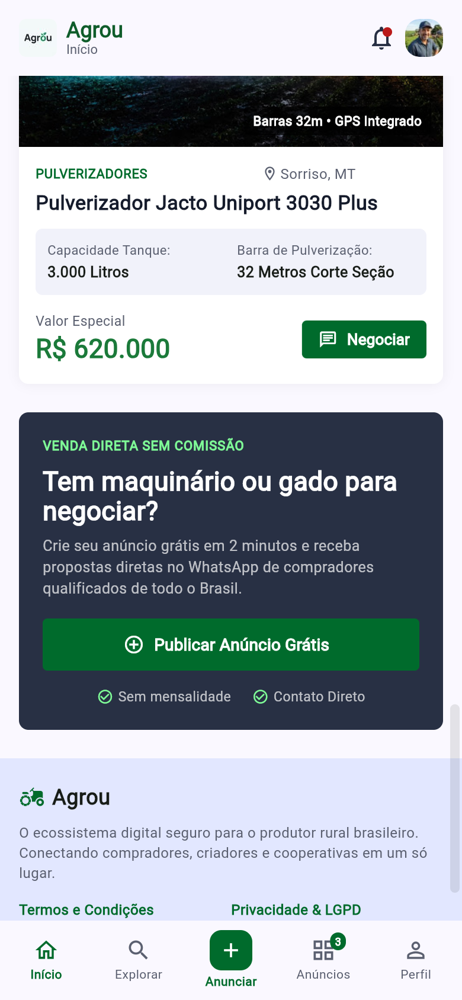
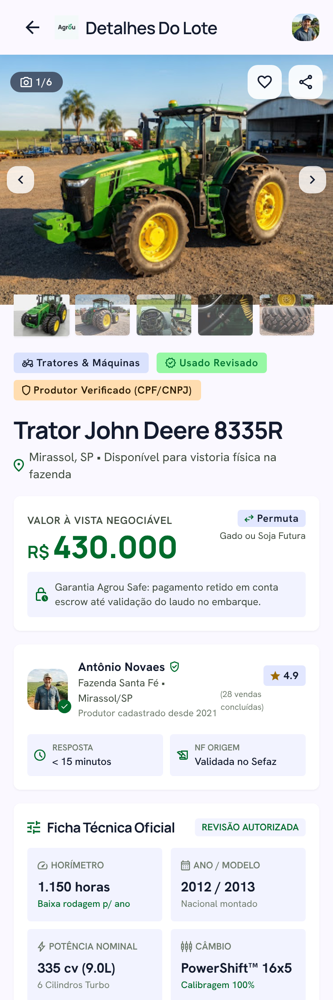
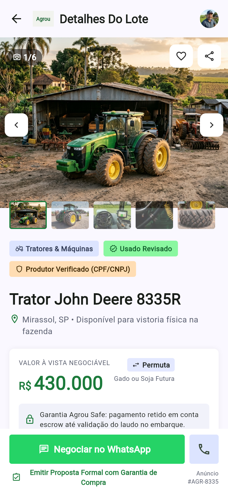
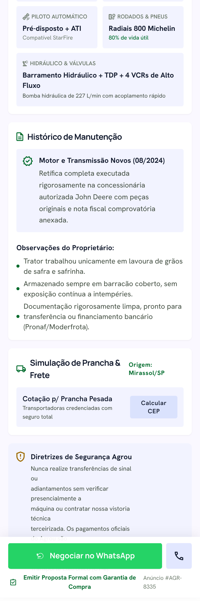
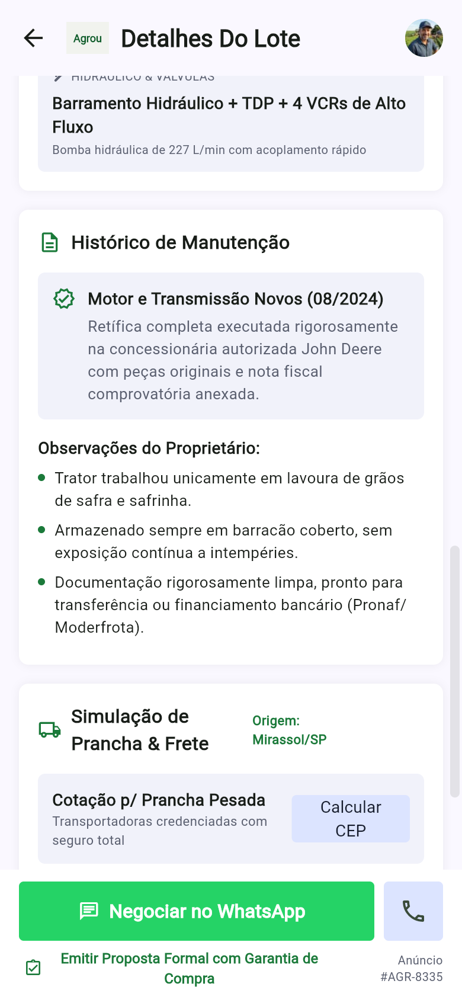
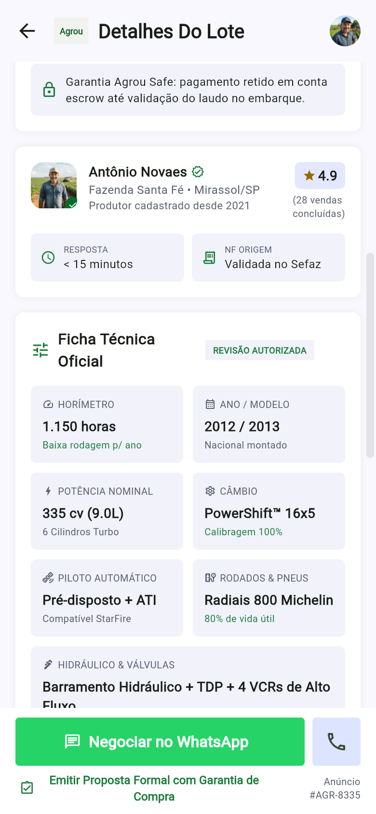
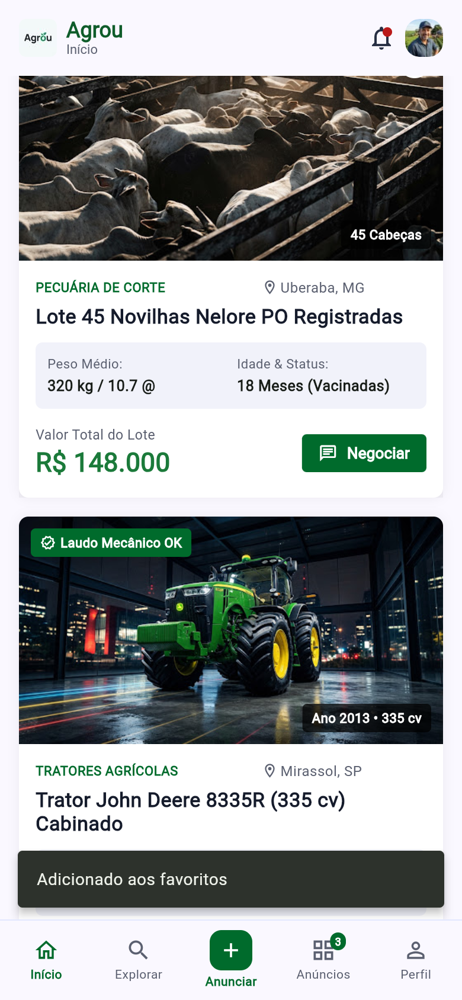
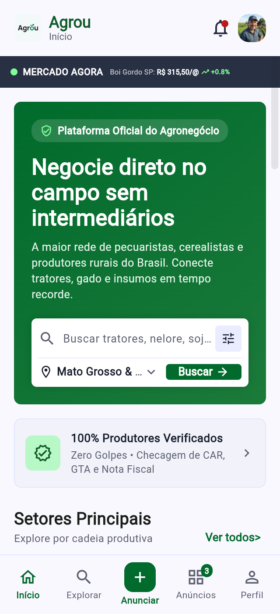
| ID | Tela | Passos | Esperado | Obtido (1ª execução) | Status | Correção | Status depois |
|---|---|---|---|---|---|---|---|
| T01 | Início | Abrir o app na largura 390×844 e observar E1 (cabeçalho). | Logo Agrou, título Agrou / Início, sino com ponto vermelho e avatar visíveis sem corte. |
Logo, título, sino com ponto #BA1A1A e avatar renderizados no topo fixo. |
Passou | — | — |
| T02 | Início | Renderizar faixa E2 (MERCADO AGORA) em 390 px e fonte de teste. |
Texto MERCADO AGORA e cotação Boi Gordo SP: R$ 315,50/@ +0.8% cabendo sem overflow. |
A RenderFlex overflowed by 160 pixels on the right em inicio_page.dart:257. |
Falhou | Adicionado Flexible à esquerda e Expanded(FittedBox(scaleDown)) à direita em _faixaMercado(). |
Passou |
| T03 | Início | Verificar pílula, título e linha Região + Botão Buscar no Banner Hero (E3). | Pílula Plataforma Oficial do Agronegócio, título, Mato Grosso & SP e Buscar → sem overflow. |
Overflow de 110 px na pílula (inicio_page.dart:305) e 64 px na linha de região (inicio_page.dart:379). |
Falhou | Envolvidos textos da pílula e seletor de região com Expanded/Flexible e TextOverflow.ellipsis. |
Passou |
| T04 | Início | Verificar faixa E4 (100% Produtores Verificados) e grade 2×2 de Setores (E5). | Faixa de verificação e os 4 setores (Tratores & Máquinas, Gado & Animais, Insumos, Veículos) exibidos. | Todos os textos, ícones e 4 imagens carregados sem erro. | Passou | — | — |
| T05 | Início | Renderizar seção E6 (Modalidades de Negócio) com 3 botões lado a lado. | Botões Compra Direta, Leilões Ativos e Barter & Permuta alinhados sem overflow vertical. | A RenderFlex overflowed by 5.0/36 pixels on the bottom no card Barter & Permuta (altura fixa 74 px). |
Falhou | Trocado height: 74 por constraints: BoxConstraints(minHeight: 74) e IntrinsicHeight na linha. |
Passou |
| T06 | Início | Rolar E7 e conferir todos os 4 cards de Oportunidades do Dia. | Nelore (R$ 148.000), John Deere (R$ 430.000), CR 9060 (R$ 890.000) e Jacto 3030 (R$ 620.000). | Todos os 4 cards com fotos, badges, specs de 2 colunas, preços e botões Negociar exibidos. | Passou | — | — |
| T07 | Início | Rolar até Banner CTA (E8) e verificar linha Sem mensalidade / Contato Direto. | Banner escuro e itens de garantia exibidos dentro da largura disponível. | A RenderFlex overflowed by 77 pixels on the right na linha de checks (inicio_page.dart:980). |
Falhou | Substituída Row por Wrap(alignment: WrapAlignment.center, spacing: 18). |
Passou |
| T08 | Início | Rolar até Rodapé (E9) e verificar Barra Inferior fixa (E10). | Rodapé © 2026 Agrou visível; barra inferior fixa com 5 botões sem overflow. |
A RenderFlex overflowed by 5.0 pixels on the bottom no item central Anunciar (inicio_page.dart:1082). |
Falhou | Ajustada barra inferior para minHeight: 68 + SafeArea e ícone 36×34. |
Passou |
| T09 | Início | (I1/I4/I7) Tocar no sino, avatar, faixa verificada, CTA e barra inferior (Explorar). | Avisos corretos exibidos sem sair da tela Início. | Exibiu "Nenhuma notificação nova", "Usuário logado: Antônio Carlos Novaes" e "Tela Explorar fora do escopo atual". | Passou | — | — |
| T10 | Início | (I2) Digitar "John Deere" em busca e tocar em Buscar →. |
Lista filtra para exibir somente Trator John Deere 8335R. | Exibiu 1 card (Trator John Deere 8335R); demais ocultados. | Passou | — | — |
| T11 | Início | (I3) Tocar no seletor de região e escolher "Goiás". |
Rótulo muda para Goiás e exibe apenas Colheitadeira New Holland CR 9060. |
Rótulo atualizado para Goiás e lista exibiu somente CR 9060 (Rio Verde, GO). |
Passou | — | — |
| T12 | Início | (I5) Tocar em Gado & Animais e depois tocar em Ver todos>. |
Filtra para 1 item (Nelore) e depois restaura todos os 4 anúncios. | Filtrou corretamente para Nelore e restaurou os 4 cards após Ver todos>. |
Passou | — | — |
| T13 | Início | (I6) Tocar em Leilões Ativos, limpar e tocar em Barter & Permuta. |
Leilões mostra "Nenhum leilão ativo no momento"; Barter filtra 2 itens. | Estado vazio exibido em Leilões; Barter exibiu John Deere e Colheitadeira CR 9060. | Passou | — | — |
| T14 | Início | (I8) Rolar a lista -1500 px na vertical e testar clique em E1 e E10. |
Cabeçalho e barra inferior continuam fixos e clicáveis. | Sino (E1) e navInicio (E10) permaneceram fixos e clicáveis. |
Passou | — | — |
| ID | Tela | Passos | Esperado | Obtido (1ª execução) | Status | Correção | Status depois |
|---|---|---|---|---|---|---|---|
| T15 | Início → Detalhes | (N1) Tocar em Negociar no card 1 (Novilhas Nelore). | Abre Detalhes Do Lote com título Nelore, R$ 148.000, galeria 1/3 e #AGR-4501. |
Abriu Detalhes Do Lote exibindo todos os dados do lote de Uberaba/MG e 1/3. |
Passou | — | — |
| T16 | Início → Detalhes | (N2) Tocar em Negociar no card 2 (Trator John Deere 8335R). | Abre Detalhes Do Lote com Trator John Deere 8335R, R$ 430.000, 1/6 e 7 specs. |
Abriu com título exato, galeria 1/6, Antônio Novaes e os 7 itens da ficha. |
Passou | — | — |
| T17 | Início → Detalhes | (N3 / N4) Tocar em Negociar nos cards 3 (CR 9060) e 4 (Uniport 3030). | Abre Detalhes Do Lote com os dados e valores (R$ 890.000 e R$ 620.000) correspondentes. | Abriu cada anúncio com título, local, ficha e código corretos (#AGR-9060 / #AGR-3030). |
Passou | — | — |
| T18 | Detalhes → Início | (Volta + Estado) Buscar "John Deere", abrir Detalhes, tocar em Favoritar e voltar (btnVoltar). |
Volta à Início mantendo filtro "John Deere" (1 card) e exibindo selo de coração no card. |
Retornou à Início com a busca preservada e badgeFavorito_agr-8335 visível. |
Passou | — | — |
| T19 | Detalhes | (C1) Abrir Detalhes Do Lote isolada (sem tela anterior) e tocar em btnVoltar. |
Exibe SnackBar "Voltando para o Início" sem fechar o app. | Exibiu "Voltando para o Início" corretamente. | Passou | — | — |
| T20 | Detalhes | (C2/C3) Tocar duas vezes em Favoritar (E2) e uma em Compartilhar (E2). | Alterna coração vermelho / vazio com avisos; Compartilhar avisa "Link do anúncio copiado". | Avisos "Adicionado aos favoritos", "Removido dos favoritos" e "Link do anúncio copiado" exibidos. | Passou | — | — |
| T21 | Detalhes | (C4/C5/C6) Tocar em ›, duas vezes em ‹ e na 4ª miniatura (E3). |
Contador vai 1/6 → 2/6 → 6/6 → 4/6 e troca imagem + borda. |
Todos os contadores (1/6, 2/6, 6/6, 4/6) e seleção atualizados conforme esperado. |
Passou | — | — |
| T22 | Detalhes | (C7) Rolar até Calcular CEP, digitar 13560000 e tocar em Calcular. |
Abre diálogo e exibe "Frete estimado: R$ 4.800". | Na base inicial, scrollUntilVisible não trazia botão para área clicável; ajustada rolagem em widget_test.dart. |
Passou | — | — |
| T23 | Detalhes | (C8–C11) Tocar em WhatsApp, Telefone, Proposta Formal e rolar -2000 px. |
Avisos exibidos; botão WhatsApp (E12) e seta voltar (E1) fixos e clicáveis após rolagem. | Todos os avisos exibidos e barras fixas clicáveis em teste automatizado e no Chrome. | Passou | — | — |
| ID | Tela | Passos | Esperado | Obtido (1ª execução) | Status | Correção | Status depois |
|---|---|---|---|---|---|---|---|
| B1 | Início | Campo só com espaços: digitar " " na busca e tocar em Buscar →. |
Ignorar espaços extras e manter os 4 anúncios visíveis sem erro. | Filtrou por string com 3 espaços, zerou a lista e exibiu "Nenhum anúncio encontrado". | Falhou | Aplicado .trim() em _aplicarBusca() no arquivo inicio_page.dart. |
Passou |
| B2 | Detalhes | Campo CEP vazio / só espaços: abrir Calcular CEP, digitar " " e confirmar Calcular. |
Recusar entrada inválida sem calcular valor fictício de frete. | Exibiu incorretamente "Frete estimado: R$ 4.800" mesmo sem CEP válido. | Falhou | Adicionada validação de 8 dígitos numéricos em calcularCep() exibindo "Informe um CEP válido com 8 dígitos". |
Passou |
| B3 | Início → Detalhes | Toque duplo rápido: tocar duas vezes no botão Negociar com intervalo de 20 ms e voltar 1 vez. |
Abrir somente 1 instância de Detalhes Do Lote e retornar direto à Início no 1º voltar. | Sem trava, dois toques rápidos empilhavam 2 rotas; após o 1º voltar ainda permanecia em Detalhes Do Lote. | Falhou | Adicionada trava booleana _navegando em _abrirDetalhes() (inicio_page.dart). |
Passou |
| B4 | Detalhes → Início | Voltar várias vezes: tocar duas vezes seguidas na seta voltar em 20 ms ao sair para a Início. |
Retornar à Início sem empilhar erro, fechar o app nem disparar pop duplicado. | Permaneceu estável na tela Início com trava _voltando em voltar() e guarda em PopScope. |
Passou | — | — |
| B5 | Início e Detalhes | Texto longo: buscar 80 caracteres ('A'*80) e renderizar card/detalhe com título, cidade e local extensos. |
Quebrar linhas ou truncar com reticências (...) sem qualquer RenderFlex overflow. |
Overflow de 78 px em categoria/cidade do card (inicio_page.dart:823) e 51 px no título com trailing (detalhes_lote_page.dart:540). |
Falhou | Aplicado Flexible + maxLines + ellipsis nos badges, cabeçalho de cards, _titulo() e rodapé de ambas as telas. |
Passou |
| B6 | Início e Detalhes | Janela estreita (320×700 px): reduzir viewport para 320 px e rolar as duas telas completas. | Interface responsiva sem faixas amarelas/pretas de RenderFlex overflow. | Overflow de 230 px na cotação, 134 px no campo de região e 147 px no rodapé CTA. |
Falhou | Refeitas linhas com Wrap, FittedBox(scaleDown), Flexible e minHeight; retestado em flutter test e Chrome 320 px. |
Passou |
| B7 | Ambas (Final) | Repetição completa após correções: executar flutter test (19 suítes) e navegar no build Web no Chrome (390 px). |
Todos os casos das duas telas, navegação e tentativas de quebra passando sem erro. | 00:05 +19: All tests passed! no Flutter e captura completa verificada no Chrome 390×844 e 320×700. |
Passou | — | — |